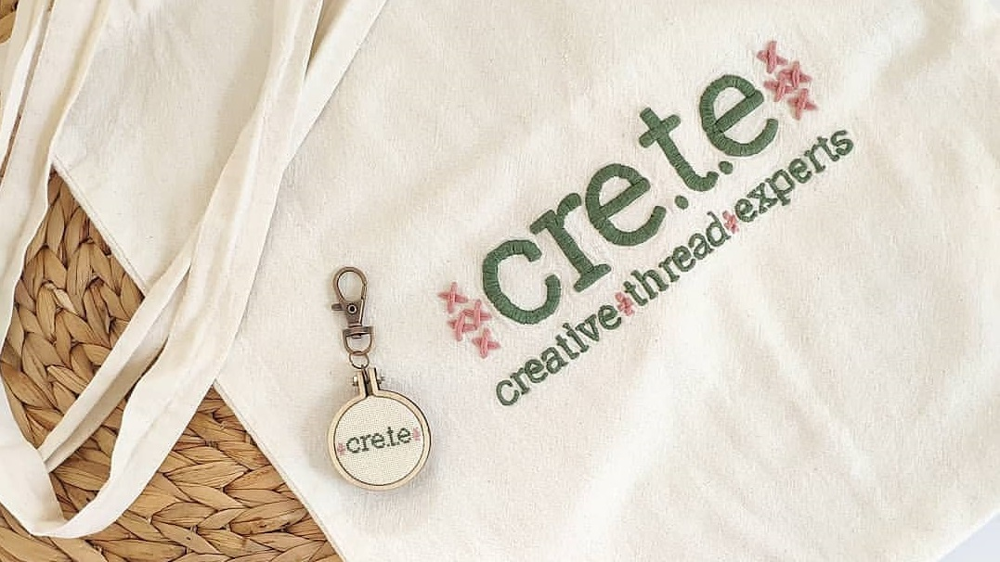

A greek, "afro", romantic girl from Crete! In love with the design, in any form it is depicted! Every new idea goes first on paper, then on the computer and finally on the fabric! The final piece comes with threads and needles! That's embroidery!!
As I have studied graphic and interior design in Greece, I worked for years in this field until I felt my hands asking for something more than the computer keyboard! So I decided to leave the capital and come to live on the biggest island of my country, Crete! I found the raw materials in my parents' shop with embroidery items and started to create my first mini embroidery on jewelry! Since then the needle has become an extension of my hand and my love for this traditional, medidating and relaxing process doesn't stop growing!!
So welcome to my handmade world!! I am so happy I can share my creations with you!! :-D In my shop you will find thread jewelries, mini embroidery accessories, decorative embroidery gifts, and stitching handiworks!